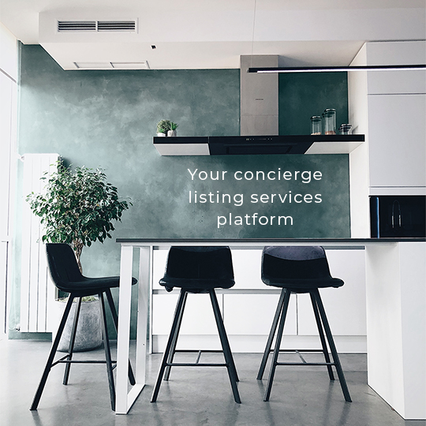
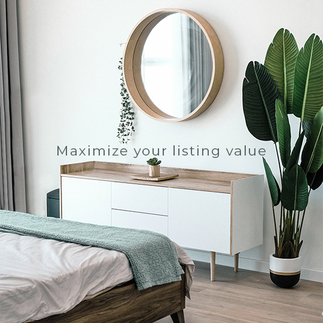
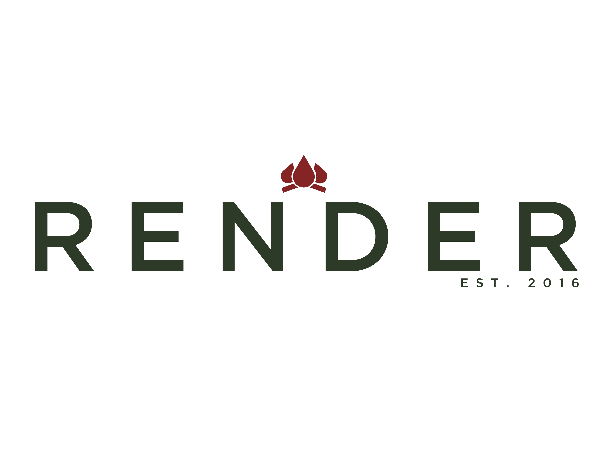
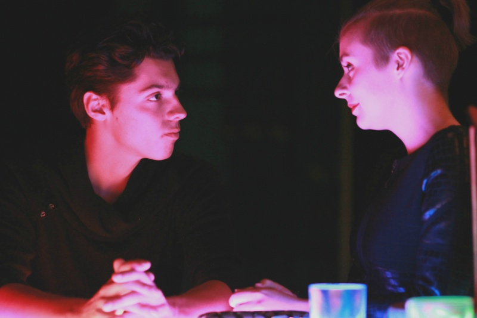
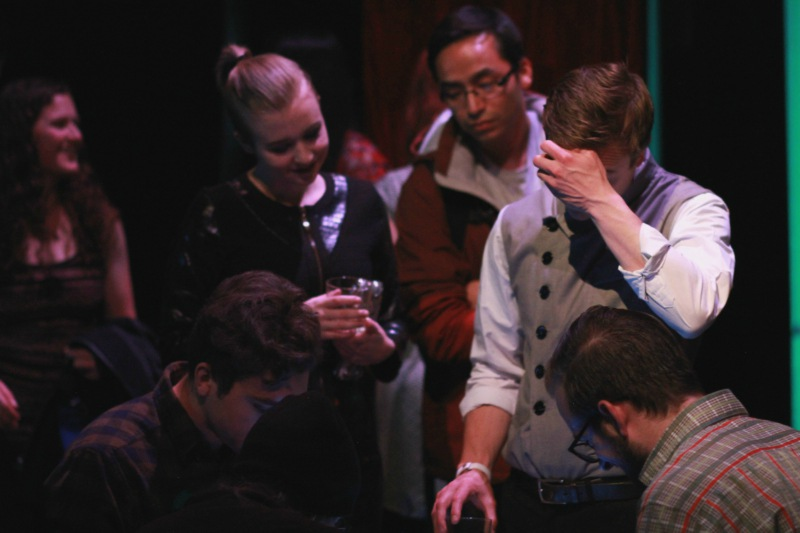
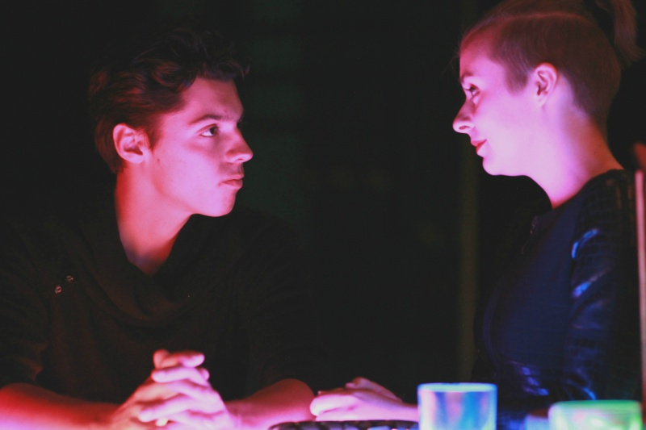
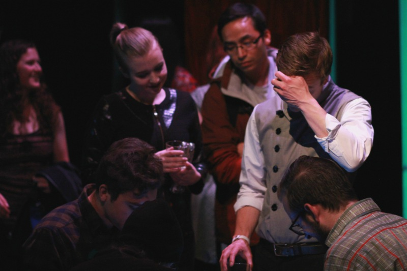
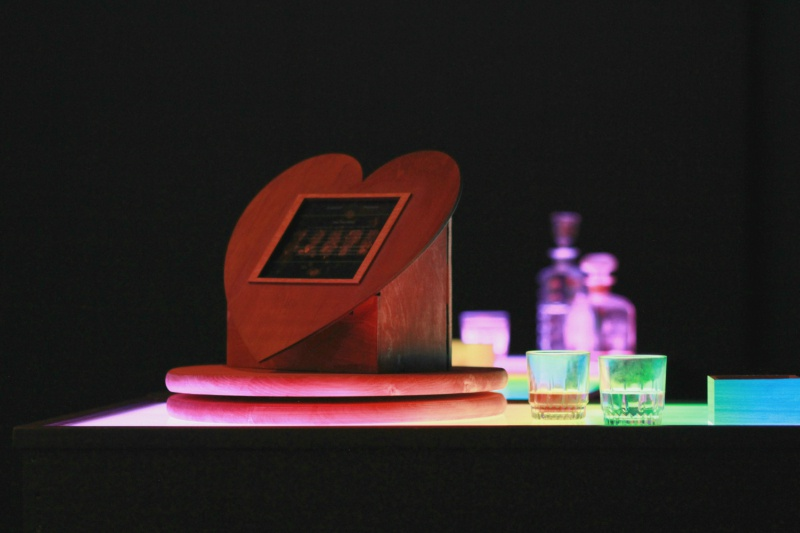
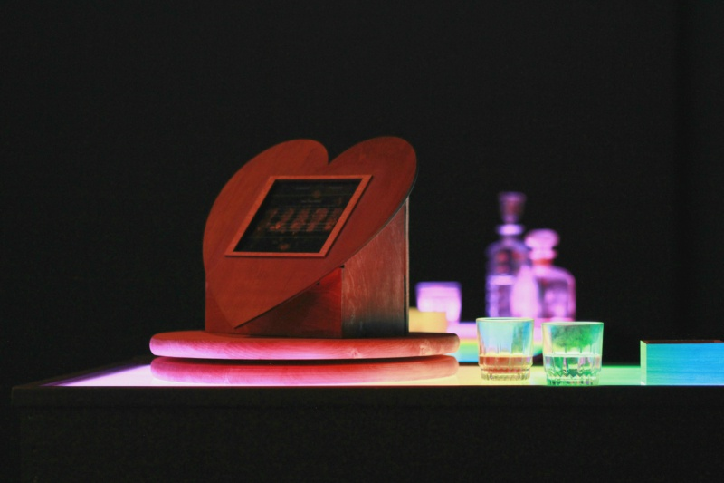
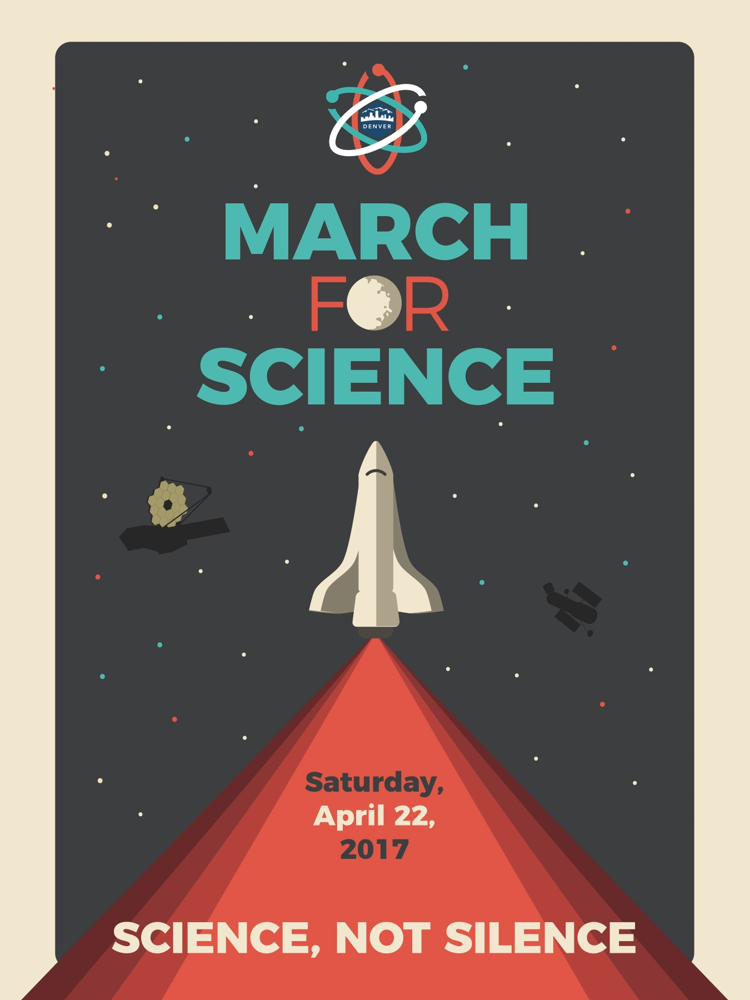

Small bites
A collection of logos, posters, and photos created for small events and businesses. These are individual freelancing projects.
gopicme
Quarantine ads I made for a photography app to instill confidence in photographers and consumers.
streamline professionals
Paid media for a real estate remodeling service. Photoshopped images to use brand colors and edited out rogue objects and created general branding for social media.


Criollo
A tasting created where Denver chefs create unlimited courses for a small audience.


Community forge
A community center for underprivilege students and families to access extracurricular activities and safe spaces in Pittsburgh.


Render
A Colorado based tasting.

CEASO
Colorado Education Association Staff Organization is a teacher's union.
Quantified Self
A poster created for an immersive theater show about data and artificial intelligence in Pittsburgh.
 



 

Colorado symphony orchestra
A poster created for the Colorado Symphony Orchestra.

March for science
I was contacted by the March for Science division in Denver to create posters for promotions.
